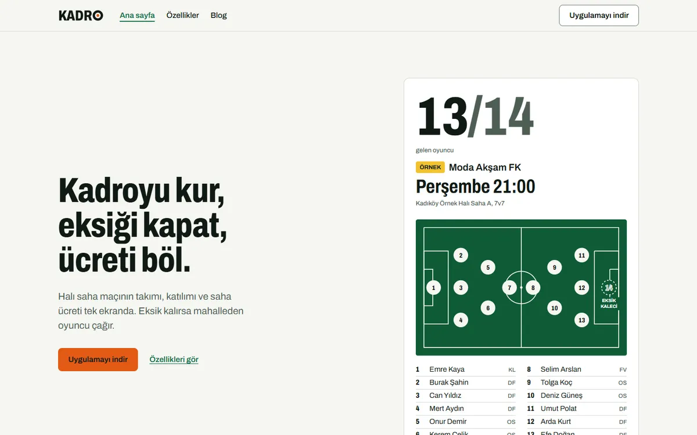
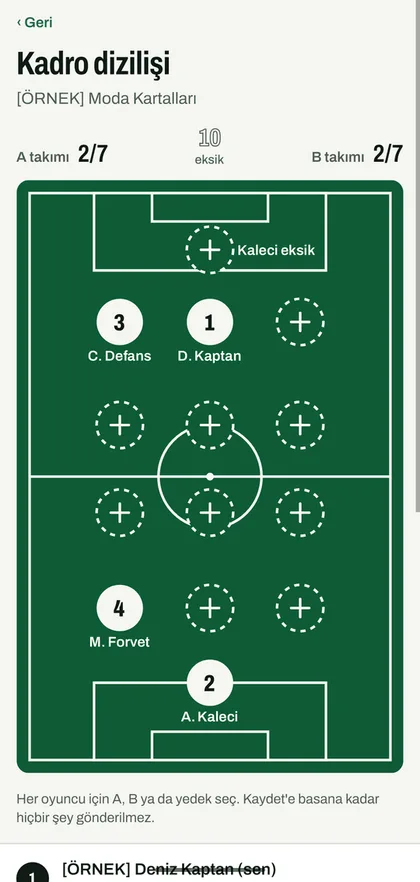

Web: yerel derleme. Uygulama: Android emülatörü. Örnek veri.
Halı saha maçı organizasyonu
Kadro
“Kadroyu kur, eksiği kapat, ücreti böl.”
Kaptan maçı kurar, katılımı toplar, eksik kalırsa mahalleden oyuncu çağırır ve saha ücretini paylaştırır. Uygulama içinde para hareketi olmaz; kaptan yalnızca kimin ödediğini takip eder.
- Expo (React Native)
- Next.js
- PostgreSQL + PostGIS
- pg-boss
- Turborepo
- Durum
- Yedi fazın hepsi (0–6)
main'de, ardından açık ve koyu görünümlü yeniden tasarım. Maestro akışlarının kayıtlı koşusu yok; mağaza satın alması yapılmadı. - Güvenlik matrisi
- 23 maddenin 13'ü tamam, 10'u kısmi